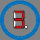

주의(Caution)
열려있는 제어기는 메인보드의 상태만을 확인하시고, 안전을 위하여 절대로 다른 것은 만지지 마십시오.
메인보드가 정상 상태임을 확인한 뒤에는 반드시 닫아주시기 바랍니다.
1.1.5.1. 개 요
메인보드(BD510)와 티치펜던트(TP520)간 통신상태가 불량하여 통신이 끊어진 경우 발생하는 에러이며, 재생(AUTO mode) 중에 이 에러가 발생하였을 경우에는 로봇을 정지시킵니다.
1.1.5.2. 원인 및 점검방법
|
(1) 제어기 내부의 메인보드가 정상 상태인지를 확인하십시오.
(2) 메인보드의 7-Segment 상태가 “.” (정상)인 경우 n TP 통신상태표시 icon이 흰색일 경우 n TP 통신상태표시 icon이 x일 경우
(3) 메인보드의 7-Segment 상태가 “u.”인 경우 n TP 통신상태표시 icon은 x표시가 됩니다.
(4) 메인보드의 7-Segment 상태가 비정상인 경우 n TP 통신상태표시 icon은 x표시가 됩니다. |
(1) 제어기 내부의 메인보드가 정상 상태인지를 확인하십시오.
메인보드 또는 티치펜던트가 어떤 이유로든 정상적이지 못할 경우 통신이 끊길 수 있습니다. 메인보드의 정상/비정상 여부는 메인보드의 7-Segment를 보고 확인할 수 있습니다.
그림 1.20 7-Segment가 정상상태, 이외는 비정상임(위 그림 참조)
전원이 투입된 상태에서 제어기 문이 닫혀있을 경우에는 문을 열고 확인하도록 하며, 문을 여는 방법은 다음 그림을 참조하십시오.
|
|
주의(Caution) 열려있는 제어기는 메인보드의 상태만을 확인하시고, 안전을 위하여 절대로 다른 것은 만지지 마십시오. 메인보드가 정상 상태임을 확인한 뒤에는 반드시 닫아주시기 바랍니다. |
(2) 메인보드의 7-Segment 상태가 “.” (정상)인 경우
TP510의 “제목표시줄” 왼편에 있는 “TP통신표시 icon”의 상태를 확인하십시오.
n TP 통신상태표시 icon이 하늘색이면 정상입니다.
n TP 통신상태표시 icon이 흰색일 경우
Ø 메인보드↔TP간 LAN Cable이 이상(open은 아님)하거나 또는 티치펜던트의 이상이 의심됩니다.
① 메인보드의 응용프로그램을 TP와 같은 버전으로 다운로드하여 주십시오.
② TP510을 교체하여 시험하십시오.
③ 제어기내 TP 커넥터↔메인보드 간 LAN Cable을 교체하여 시험하십시오.
④ 동일 현상이 계속될 경우 당사 AS팀에 연락바랍니다.
n TP 통신상태표시 icon이 x일 경우
Ø 메인보드↔TP간 LAN Cable이 단선(open)이 의심됩니다.
① TP를 교체하여 시험하십시오.
② 제어기내 TP 커넥터↔메인보드 간 LAN Cable을 교체하여 시험하십시오.
③ 동일 현상이 계속될 경우 당사 AS팀에 연락바랍니다.
(3) 메인보드의 7-Segment 상태가 “u.”인 경우
n TP 통신상태표시 icon은 x표시가 됩니다.
Ø 메인보드↔시스템보드 간 Cable 또는 시스템보드가 의심됩니다.
① Cable 양단의 커넥터(CANIO↔CAN1)가 잘 꽂혀졌는지 확인하십시오.
② CNMC 커넥터의 전원이 AC48V인지 확인하십시오.
③ SW1의 VE(3pin)이 DC0V 인지 확인하십시오.
④ (CANIO↔CAN1)Cable 을 교체하여 시험하십시오.
⑤ 시스템보드를 교체하여 시험하십시오.
⑥ 동일 현상의 경우 당사 AS팀에 연락바랍니다.
|  |
(4) 메인보드의 7-Segment 상태가 비정상인 경우
n TP 통신상태표시 icon은 x표시가 됩니다.

Ø 이 경우는 메인보드의 문제입니다.
① 메인보드를 교체하여 시험하십시오.
② 동일 현상의 경우 당사 AS팀에 연락바랍니다.